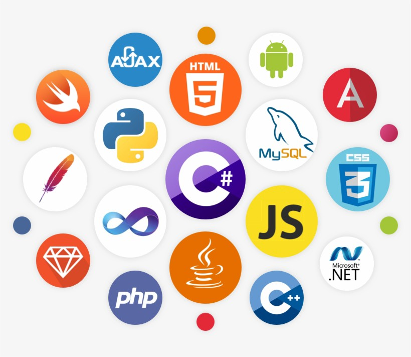

Origem do nome
O nome do projeto teve como inspiração a Deusa Gaia da mitologia grega. Sendo ela a deusa da Terra, criadora do planeta

O nome do projeto teve como inspiração a Deusa Gaia da mitologia grega. Sendo ela a deusa da Terra, criadora do planeta
Nomes: Gabriel Baroni, Davi Porto, Vinícius Maximo, Renan Alexanfre, Maria Wianney e Miguel Melo.

O projeto conta com um servidor feito em python, o código dos sensores do arduino feito em C++, as páginas do site feitas em html e css e o gráfico feito em javascript.
